폐기물처리기사 (2022-04-24 기출문제)
1과목: 폐기물 개론
1. 혐기성 소화에서 독성을 유발 시킬 수 있는 물질의 농도(mg/L)로 가장 적절한 것은?
- Fe : 1000
- Na : 3500
- Ca : 1500
- Mg : 800
(정답률: 62%)

2. 도시폐기물의 유기성 성분 중 셀룰로오스에 해당하는 것은?
- 6탄당의 중합체
- 아미노산 중합체
- 당, 전분 등
- 방향환과 메톡실기를 포함한 중합체
(정답률: 73%)
3. 다음 조건을 가진 지역의 일일 최소 쓰레기 수거 횟수(회)는? (단, 발생쓰레기 밀도 = 500 kg/m3, 발생량 = 1.5kg/인·일, 수거대상 = 200000인, 차량대수 = 4(동시사용), 차량 적재 용적 = 50m3, 적재함 이용율 = 80%, 압축비 = 2, 수거인부 = 20명)
- 2
- 4
- 6
- 8
(정답률: 48%)
4. 완전히 건조시킨 폐기물 20g을 채취해 회분함량을 분석하였더니 5g 이었다. 폐기물의 함수율이 40% 이었다면, 습량기준으로 회분 중량비(%)는? (단, 비중 = 1.0)
- 5
- 10
- 15
- 20
(정답률: 49%)
5. 소각방식 중 회전로(Rotary Kiln)에 대한 설명으로 옳지 않은 것은?
- 넓은 범위의 액상, 고상 폐기물은 소각할 수 있다.
- 일반적으로 회전속도는 0.3~1.5 rpm, 주변속도는 5~25 mm/sec 정도이다.
- 예열, 혼합, 파쇄 등 전처리를 거쳐야만 주입이 가능하다.
- 회전하는 원통형 소각로로서 경사진 구조로 되어있으며 길이와 직경의 비는 2~10 정도이다.
(정답률: 63%)
6. 전과정평가(LCA)의 구성요소로 가장 거리가 먼 것은?
- 개선평가
- 영향평가
- 과정분석
- 목록분석
(정답률: 65%)
7. 분뇨의 함수율이 95% 이고 유기물 함량이 고형질질량의 60%를 차지하고 있다. 소화조를 거친 뒤 유기물량을 조사하였더니 원래의 반으로 줄었다고 한다. 소화된 분뇨의 함수율(%)은? (단, 소화 시 수분의 변화는 없다고 가정한다. 분뇨 비중은 1.0 으로 가정함)
- 95.5
- 96.0
- 96.5
- 97.0
(정답률: 47%)
8. 폐기물처리 또는 재상방법에 대한 사항의 설명으로 가장 거리가 먼 것은?
- Compaction의 장점은 공기층 배제에 의한 부피축소이다.
- 소각의 장점은 부피축소 및 질량감소이다.
- 자력선별장비의 선별효율은 비교적 높다.
- 스크린의 종류 중 선별효율이 가장 우수한 것은 진동스크린이다.
(정답률: 67%)
9. 슬러지 처리과정 중 농축(thickening)의 목적으로 적합하지 않은 것은?
- 소화조의 용적 절감
- 슬러지 가열비 절감
- 독성물질의 농도 절감
- 개량에 필요한 화학 약품 절감
(정답률: 74%)
10. 다음의 폐수처리장 슬러지 중 2차 술러지에 속하지 않은 것은?
- 활성 슬러지
- 소화 슬러지
- 화학적 슬러지
- 살수여상 슬러지
(정답률: 43%)
11. 쓰레기 수거노선 설정 요령으로 가장 거리가 먼 것은?
- 지형이 언덕인 경우는 내려가면서 수거한다.
- U자 회전을 피하여 수거한다.
- 아주 많은 양의 쓰레기가 발생되는 발생원은 하루 중 가장 나중에 수거한다.
- 가능한 한 시계 방향으로 수거노선을 설정한다.
(정답률: 82%)
12. 1000세대(세대 당 평균 가족 수 5인) 아파트에서 배출하는 쓰레기를 3일마다 수거하는데 적재용량 11.0m3의 트럭 5대(1회 기준)가 소요된다. 쓰레기 단위 용적당 중량이 210 kg/m3 이라면 1인 1일당 쓰레기 배출량(kg/인·일)은?
- 2.31
- 1.38
- 1.12
- 0.77
(정답률: 64%)
13. 트롬멜 스크린에 관한 설명으로 옳지 않은 것은?
- 스크린의 경사도가 크면 효율이 떨어지고 부하율도 커진다.
- 최적속도는 경험적으로 임계속도×0.45 정도이다.
- 스크린 중 유지관리상의 문제가 적고, 선별효율이 좋다.
- 스크린의 경사도는 대개 20~30° 정도이다.
(정답률: 70%)
14. 폐기물 발생량이 5백만톤/년 인 지역의 수거인부의 하루 작업시간이 10시간이고, 1년의 작업일수는 300일이다. 수거효율(MHT)은 1.8로 운영되고 있다면 필요한 수거인부의 수(명)는?
- 3000
- 3100
- 3200
- 3300
(정답률: 67%)
15. 폐기물 발생량 예측방법 중에서 각 인자들의 효과를 총괄적으로 나타내어 복잡한 시스템의 분석에 유용하게 적용할 수 있는 것은?
- 경향법
- 다중회귀모델
- 동적모사모델
- 인자분석모델
(정답률: 63%)
16. pipe line(관로수송)에 의한 폐기물 수송에 대한 설명으로 가장 거리가 먼 것은?
- 단거리 수송에 적합하다.
- 잘못 투입된 물건은 회수하기가 곤란하다.
- 조대쓰레기에 대해 파쇄, 압축 등의 전처리가 필요하다.
- 쓰레기 발생밀도가 낮은 곳에서 사용된다.
(정답률: 79%)
17. 폐기물을 Ultimate Analysis에 의해 분석할 때 분석대상 항목이 아닌 것은?
- 질소(N)
- 황(S)
- 인(P)
- 산소(O)
(정답률: 62%)
18. 쓰레기의 부피를 감소시키는 폐기물처리 조작으로 가장 거리가 먼 것은?
- 압축
- 매립
- 소각
- 열분해
(정답률: 80%)
19. 생활폐기물의 관리와 그 기능적 요소에 포함되지 않는 사항은?
- 폐기물의 발생 및 수거
- 폐기물의 처리 및 처분
- 원료의 절약과 발생억제
- 폐기물의 운반 및 수송
(정답률: 73%)
20. 재활용 대책으로서 생산·유통구조를 개선하고자 할 때 고려해야할 사항으로 가장 거리가 먼 것은?
- 재활용이 용이한 제품의 생산촉진
- 폐자원의 원료사용 확대
- 발생부산물의 처리방법 강구
- 제조업종별 생산사 공동협력체계 강화
(정답률: 52%)
2과목: 폐기물 처리 기술
21. 매립지 주위의 우수를 배수하기 위한 배수로 단면을 결정하고자 한다. 이 때 유속을 계산하기 위해 사용되는 식(Manning 공식)에 포함되지 않는 것은?
- 유출계수
- 조도계수
- 경심
- 강우강도
(정답률: 42%)
22. 폐기물이 매립될 때 매립된 유기성 물질의 분해과정으로 옳은 것은?
- 호기성→혐기성(메탄 생성→산 생성)
- 호기성→혐기성(산 생성→메탄 생성)
- 혐기성→호기성(메탄 생성→산 생성)
- 혐기성→호기성(산 생성→메탄 생성)
(정답률: 67%)
23. 플라스틱 재활용하는 방법과 가장 거리가 먼 것은?
- 열분해 이용법
- 용융고화재생 이용법
- 유리화 이용법
- 파쇄 이용법
(정답률: 62%)
24. 아래와 같은 조건일 때 혐기성 소화주의 용량(m3)은? (단, 유기물량의 50%가 액화 및 가스화된다고 한다. 방식은 2조식이다.)
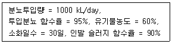
- 12350
- 17850
- 20250
- 25500
(정답률: 46%)
25. 매립상식 중 cell방식에 대한 내용으로 가장 거리가 먼 것은?
- 일일복토 및 침술수 처리를 통해 위생적인 매립이 가능하다.
- 쓰레기의 흩날림을 방지하며, 악취 및 해충의 발생을 방지하는 효과가 있다.
- 일일복토와 bailing을 통한 폐기물 압축으로 매립부피를 줄일 수 있다.
- cell마다 독립된 매립층이 완성되므로 화재 확산 방지에 유리하다.
(정답률: 65%)
26. 매일 200ton의 쓰레기를 배출하는 도시가 있다. 매립지에 평균 매립 두께를 5m, 매립밀도를 0.8 ton/m3로 가정할 때 1년 동안 쓰레기를 매립하기 위한 최소한의 매립지 면적(m2)은? (단, 기타 조건은 고려하지 않음)
- 12250
- 15250
- 18250
- 21250
(정답률: 68%)
27. 토양수분의 물리학적 분류 중 1000cm 물기둥의 압력으로 결합되어 있는 경우 다음 중 어디에 속하는가?
- 모세관수
- 흡습수
- 유효수분
- 결합수
(정답률: 52%)
28. 시멘트 고형화화법 중 자가시멘트법에 대한 설명으로 가장 거리가 먼 것은?
- 혼합율이 낮고 중금속 저지에 효과적이다.
- 탈수 등 전처리와 보조에너지가 필요하다.
- 장치비가 크고 숙련된 기술을 요한다.
- 고농도 황화물 함유 폐기물에만 적용된다.
(정답률: 40%)
29. 고형화 처리 중 시멘트 기초법에서 가장 흔히 사용되는 보통 포틀랜드 시멘트의 주 성분은?
- CaO, Al2O3
- CaO, SiO2
- CaO, MgO
- CaO, Fe2O3
(정답률: 71%)
30. 비배출량(specific discharge)이 1.6×10-8 m/sec 이고 공극률 0.4인 수분포화 상태의 매립지에서의 물의 침투속도(m/sec)는?
- 4.0×10-8
- 0.96×10-8
- 0.64×10-8
- 0.25×10-8
(정답률: 44%)
31. 파쇄과정에서 폐기물의 입도분포를 측정하여 입도 누적곡선상에 나타낼 때 10%에 상당하는 입경(전체 중량의 10%를 통과시킨 체눈의 크기에 상당하는 입경)은?
- 평균입경
- 메디안경
- 유효입경
- 중위경
(정답률: 75%)
32. 1일 폐기물 배출량이 700ton인 도시에서 도랑(Trench)법으로 매립지를 선정하려 한다. 쓰레기의 압축이 30% 가 가능하다면 1일 필요한 매립지 면적(m2)은? (단, 발생된 쓰레기의 밀도는 250 kg/m3, 매립지의 깊이는 2.5m)
- 634
- 784
- 854
- 964
(정답률: 63%)
33. 고형물 4.2%를 함유한 슬러지 150000kg을 농축조로 이송한다. 농축조에서 농축 후 고형물의 손실 없이 농축슬러지를 소화조로 이송할 경우 슬러지의 무게 70000kg 이라면 농축된 슬러지의 고형물 함유율(%)은? (단, 슬러지 비중은 1.0으로 가정함)
- 6.0
- 7.0
- 8.0
- 9.0
(정답률: 59%)
34. 토양오염정화 방법 중 Bioventing 공법의 장·단점으로 틀린 것은?
- 배출가스 처리의 추가비용이 없다.
- 지상의 활동에 방해 없이 정화작업을 수행할 수 있다.
- 주로 포화층에 적용한다.
- 장치가 간단하고 설치가 용이하다.
(정답률: 52%)
35. 도시의 폐기물 중 불연성분 70%, 가연성분 30%이고, 이 지역의 폐기물 발생량은 1.4 kg/인·일이다. 인구 50000명인 이 지역에서 불연성분 60%, 가연성분 70%를 회수하여 이 중 가연성분으로 SRF를 생산한다면 SRF의 일일 생산량(ton)은?
- 약 14.7
- 약 20.2
- 약 25.6
- 약 30.1
(정답률: 51%)
36. 퇴비화 방법 중 뒤집기식 퇴비단공법의 특징이 아닌 것은?
- 일반적으로 설치비용이 적다.
- 공기공급량 제어가 쉽고 악취영향반경이 작다.
- 운영 시 날씨에 맣은 영향을 받는다는 문제점이 있다.
- 일반적으로 부지소요가 크나 운영비용은 낮다.
(정답률: 61%)
37. 호기성 퇴비화 공정의 설계·운영 고려 인자에 관한 내용으로 틀린 것은?
- 공기의 채널링이 원활하게 발생하도록 반응기간 동안 규칙적으로 교반하거나 뒤집어 주어야 한다.
- 퇴비단의 온도는 초기 며칠간은 50~55℃를 유지하여야 하며 활발한 분해를 위해서는 55~60℃가 적당하다.
- 퇴비화 기간 동안 수분함량은 50~60% 범위에서 유지되어야 한다.
- 초기 C/N비는 25~50이 적정하다.
(정답률: 50%)
38. 인구가 400000명인 도시의 쓰레기배출원 단위가 1.2kg/인·day이고, 밀도는 0.45ton/m3 으로 측정되었다. 쓰레기를 분쇄하여 그 용적이 2/3로 되었으며, 분쇄된 쓰레기를 다시 압축하면서 또다시 1/3 용적이 축소되었다. 분쇄만 하여 매립할 때와 분쇄, 압축한 후에 매립할 때에 두 경우의 연간 매립소요면적의 차이(m2)는? (단, Trench 깊이는 4m 이며 기타 조건은 고려 안함)
- 약 12820
- 약 16230
- 약 21630
- 약 28540
(정답률: 45%)
39. 토양오염의 특성으로 가장 거리가 먼 것은?
- 오염영향의 국지성
- 피해발현의 급진성
- 원상복구의 어려움
- 타 환경인자와 영향관계의 모호성
(정답률: 60%)
40. 6.3%의 고형물을 함유한 150000kg의 슬러지를 농축한 후, 소화조로 이송할 경우 농축슬러지의 무게는 70000kg이다. 이 때 소화조로 이송한 농축된 슬러지의 고형물 함유율(%)은? (단, 슬러지의 비중 = 1.0, 상등액의 고형물 함량은 무시)
- 11.5
- 13.5
- 15.5
- 17.5
(정답률: 65%)
3과목: 폐기물 소각 및 열회수
41. 쓰레기의 발열량을 H, 불완전연소에 의한 열손실을 Q, 태우고 난 후의 재의 열손실을 R이라 할 때 연소효율 η을 구하는 공식 중 옳은 것은?
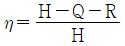
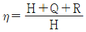
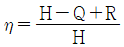
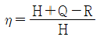
(정답률: 68%)
42. 완전연소의 경우 고위발열량(kcal/kg)이 가장 큰 것은?
- 메탄
- 에탄
- 프로판
- 부탄
(정답률: 54%)
43. 소각로에 폐기물을 연속적으로 주입하기 위해서는 충분한 저장시설을 확보하여야 한다. 연속주입을 위한 폐기물의 일반적인 저장시설 크기로 적당한 것은?
- 24~36시간분
- 2~3일분
- 7~10일분
- 15~20일분
(정답률: 62%)
44. 프로판(C3H8) : 부탄(C4H10)이 40vol% : 60vol% 로 혼합된 기체 1 Sm3가 완전연소될 때 발생되는 CO2의 부피(Sm3)는?
- 3.2
- 3.4
- 3.6
- 3.8
(정답률: 53%)
45. 열교환기 중 과열기에 대한 설명으로 틀린 것은?
- 보일러에서 발생하는 포화증기에 다량의 수분이 함유되어 있으므로 이것을 과열하여 수분을 제거하고 과열도가 높은 증기를 얻기 위해 설치한다.
- 일반적으로 보일러 부하가 높아질수록 대류과열기에 의한 과열 온도는 저하하는 경향이 있다.
- 과열기는 그 부착 위치에 전열형태가 다르다.
- 방사형 과열기는 주로 화염의 방사열을 이용한다.
(정답률: 55%)
46. 프로판(C3H8)의 고위발열량이 24300 kcal/Sm3 일대 저위발열량(kcal/Sm3)은?
- 22380
- 22840
- 23340
- 23820
(정답률: 57%)
47. 연료는 일반적으로 탄화수소화합물로 구성되어 있는데, 액체연료의 질량조성이 C 75%, H 25% 일 때 C/H 물질량(mol)비는?
- 0.25
- 0.50
- 0.75
- 0.90
(정답률: 44%)
48. 황화수소 1 Sm3의 이론연소 공기량(Sm3)은?
- 7.1
- 8.1
- 9.1
- 10.1
(정답률: 55%)
49. 소각로에서 열교환기를 이용해 배기가스의 열을 전량 회수하여 급수 예열을 한다고 한다면 급수 입구온도가 20℃일 경우 급수의 출구 온도(℃)는? (단, 급수량 = 1000 kg/h, 물비열 = 1.03 kcal/kg·℃, 배기가스 유량 = 1000 kg/h, 배기가스의 입구온도 = 400℃, 배기가스의 출구온도 = 100℃, 배기가스 평균정압비열 = 0.25 kcal/kg·℃)
- 79
- 82
- 87
- 93
(정답률: 32%)
50. 다단로방식 소각로의 장·단점으로 옳지 않은 것은?
- 유해폐기물의 완전분해를 위한 2차 연소실이 필요 없다.
- 분진발생량이 많다.
- 휘발성이 적은 폐기물 연소에 유리하다.
- 체류시간이 길기 때문에 온도반응이 더디다.
(정답률: 51%)
51. 화격자 연소기에 대한 설명으로 옳은 것은?
- 휘발성분이 많고 열분해 하기 쉬운 물질을 소각할 경우 상향식 연소방식을 쓴다.
- 이동식 화격자는 주입폐기물을 잘 운반시키거나 뒤집지는 못하는 문제점이 있다.
- 수분이 많거나 플라스틱과 같이 열에 쉽게 용해되는 물질에 의한 화격자 막힘의 우려가 없다.
- 체류시간이 짧고 교반력이 강하여 국부가열이 발생할 우려가 있다.
(정답률: 35%)
52. 소각공정과 비교할 때 열분해공정의 장점으로 옳지 않은 것은?
- 배기 가스량이 적다.
- 황 및 중금속이 회분 속에 고정되는 비율이 낮다.
- NOx의 발생량이 적다.
- 환원성 분위기가 요주되므로 3가 크롬이 6가 크롬으로 변화되기 어렵다.
(정답률: 55%)
53. 화상부하율(연소량/화상면적)에 대한 설명으로 옳지 않은 것은?
- 화상부하율을 크게 하기 위해서는 연소량을 늘리거나 화상면적을 줄인다.
- 화상부하율이 너무 크면 로내 온도가 저하하기도 한다.
- 화상부하율이 적어질수록 화상면적이 축소되어 compact화 된다.
- 화상부하율이 너무 커지면 불완전연소의 문제가 발생하기도 한다.
(정답률: 60%)
54. 소각로에 폐기물을 투입하는 1시간 중에 투입작업시간을 40분, 나머지 20분은 정리시간과 휴식시간으로 한다. 크레인 바켓트 용량 4m3, 1회 투입하는 시간을 120초, 바켓트 용적중량은 최대 0.4ton/m3일 때 폐기물의 1일 최대 공급능력(ton/day)은? (단, 소각로는 24시간 연속가동)
- 524
- 684
- 768
- 874
(정답률: 50%)
55. 다이옥신을 억제시키는 방법이 아닌 것은?
- 제1차적(사전방지) 방법
- 제2차적(로내) 방법
- 제3차적(후처리) 방법
- 제4차적 전자선조사법
(정답률: 55%)
56. 연소시키는 물질의 발화온도, 함수량, 공급공기량, 연소기의 형태에 따라 연소온도가 변화된다. 연소온도에 관한 설명 중 옳지 않은 것은?
- 연소온도가 낮아지면 불완전 연소로 HC나 CO 등이 생성되며 냄새가 발생된다.
- 연소온도가 너무 높아지면 NOx나 SOx가 생성되며 냉각공기의 주입량이 많아지게 된다.
- 소각로의 최소온도는 650℃ 정도이지만 스팀으로 에너지를 회수하는 경우에는 연소온도를 870℃ 정도로 높인다.
- 함수율이 높으면 연소온도가 상승하며, 연소물질의 입자가 커지면 연소시간이 짧아진다.
(정답률: 60%)
57. 유동층 소각로에 관한 설명으로 가장 거리가 먼 것은?
- 상(床)으로부터 슬러지의 분리가 어렵다.
- 가스의 온도가 낮고 과잉공기량이 낮다.
- 미연소분 배출로 2차 연소실이 필요하다.
- 기계적 구동부분이 적어 고장율이 낮다.
(정답률: 58%)
58. 아래와 같은 조성을 갖는 폐기물을 완전연소 시킬 때의 이론공기량(Sm3/kg)은?
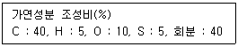
- 2.7
- 3.7
- 4.7
- 5.7
(정답률: 52%)
59. 소각로의 설계기준이 되고 있는 저위발열량에 대한 설명으로 옳은 것은?
- 쓰레기 속의 수분과 연소에 의해 생성된 수분의 응축열을 포함한 열량
- 고위발열량에서 수분의 응축열을 제외한 열량
- 쓰레기를 연소할 때 발생되는 열량으로 수분의 수증기 열량이 포함된 열량
- 연소 배출가스 속의 수분에 의한 응축열
(정답률: 69%)
60. 폐기물 내 유기물을 완전연소시키기 위해서는 3T라는 조건이 구비되어야 한다. 3T에 해당하지 않는 것은?
- 충분한 온도
- 충분한 연소시간
- 충분한 연료
- 충분한 혼합
(정답률: 69%)
4과목: 폐기물 공정시험기준(방법)
61. 기체크로마토그래피로 유기인을 분석할 때 시료관리 기준으로 ( )에 옳은 것은?
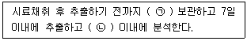
- ㉠ 4℃ 냉암소에서, ㉡ 21일
- ㉠ 4℃ 냉암소에서, ㉡ 40일
- ㉠ pH 4 이하로, ㉡ 21일
- ㉠ pH 4 이하로, ㉡ 40일
(정답률: 56%)
62. 가스체의 농도는 표준상태로 환산 표시한다. 이 조건에 해당되지 않는 것은?
- 상대습도 : 100%
- 온도 : 0℃
- 기압 : 760 mmHg
- 온도 : 273K
(정답률: 65%)
63. 크롬 표준원액(100mg Cr/L) 1000mL를 만들기 위해서 필요한 다이크롬산칼륨(표준시약)의 양(g)은? (단, K : 39, Cr : 52)
- 0.213
- 0.283
- 0.353
- 0.393
(정답률: 44%)
64. 유도결합플라스마발광광도 기계의 토치에 흐르는 운반물질, 보조물질, 냉각물질의 종류는 몇 종류의 물질로 구성되는가?
- 2종의 액체와 1종의 기체
- 1종의 액체와 2종의 기체
- 1종의 액체와 1종의 기체
- 1종의 기체
(정답률: 47%)
65. 원자흡광분석에서 일반적인 간섭에 해당되지 않는 것은?
- 분광학적 간섭
- 물리적 간섭
- 화학적 간섭
- 첨가물질의 간섭
(정답률: 56%)
66. 3000g의 시료에 대하여 원추 4분법을 5회 조작하여 최종 분취된 시료의 양(g)은?
- 약 31.3
- 약 62.5
- 약 93.8
- 약 124.2
(정답률: 61%)
67. 유기인 측정(기체크로마토그래피법)에 대한 설명으로 옳지 않은 것은?
- 크로마토그램을 작성하여 각 분석성분 및 내부표준물질의 머무름시간에 해당하는 피크로부터 면적을 측정한다.
- 추출물 10~30μL를 취하여 기체크로마토그래프에 주입하여 분석한다.
- 시료채취는 유리병을 사용하며 채취 전에 시료로서 세척하지 말아야 한다.
- 농축장치는 구테루나 다니쉬 농축기를 사용한다.
(정답률: 34%)
68. 시료의 용출시험방법에 관한 설명으로 ( ) 에 옳은 것은? (단, 상온, 상압 기준)
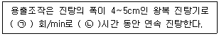
- ㉠ 200, ㉡ 6
- ㉠ 200, ㉡ 8
- ㉠ 300, ㉡ 6
- ㉠ 300, ㉡ 8
(정답률: 61%)
69. 기체크로마토그래피를 이용하면 물질의 정량 및 정성분석이 가능하다. 이 중 정량 및 정성분석을 가능하게 하는 측정치는?
- 정량 – 유지시간, 정성 – 피크의 높이
- 정량 – 유지시간, 정성 – 피크의 폭
- 정량 – 피크의 높이, 정성 – 유지시간
- 정량 – 피크의 폭, 정성 – 유지시간
(정답률: 59%)
70. 원자흡수분광광도법에 있어서 간섭이 발생되는 경우가 아닌 것은?
- 불꽃의 온도가 너무 낮아 원자화가 일어나지 않는 경우
- 불안정한 환원물질로 바뀌어 불꽃에서 원자화가 일어나지 않는 경우
- 염이 많은 시료를 분석하여 버너 헤드 부분에 고체가 생성되는 경우
- 시료 중에 알칼리금속에 할로겐 화합물을 다량 함유하는 경우
(정답률: 43%)
71. 분석하고자 하는 대상폐기물의 양이 100톤 이상 500톤 미만인 경우에 채취하는 시료의 최소수(개)는?
- 30
- 36
- 45
- 50
(정답률: 60%)
72. pH측정에 관한 설명으로 틀린 것은?
- 수소이온 전극의 기전력은 온도에 의하여 변화한다.
- pH 11 이상의 시료는 오차가 크므로 알칼리용액에서 오차가 적은 특수전극을 사용한다.
- 조제한 pH 표준용액 중 산성표준용액은 보통 1개월, 염기성표준용액은 산화칼슘(생석회) 흡수관을 부착하여 3개월 이내에 사용한다.
- pH 미터는 임의의 한 종류의 pH 표준용액에 대하여 검출부를 정제수로 잘 씻은 다음 5회 되풀이하여 측정했을 때 그 재현성이 ±0.⑤ 이내 이어야 한다.
(정답률: 56%)
73. 기체크로마토그래피법의 설치조건에 대한 설명으로 틀린 것은?
- 실온 5~35℃, 상대습도 85% 이하로서 직사일광의 쪼이지 않는 곳으로 한다.
- 전원변동은 지정전압의 35% 이내로 주파수의 변동이 없는 것이어야 한다.
- 설치장소는 진동이 없고 분석에 사용하는 유해물질을 안전하게 처리할 수 있어야 한다.
- 부식가스나 먼지가 적은 곳으로 한다.
(정답률: 45%)
74. 폐기물로부터 유류 추출 시 에멀젼을 형성하여 액층이 분리되지 않을 경우, 조작법으로 옳은 것은?
- 염화제이철 용액 4mL를 넣고 pH를 7~9로 하여 자석교반기로 교반한다.
- 메틸오렌지를 넣고 황색이 적색이 될 때까지 (1+1)염산을 넣는다.
- 노말헥산층에 무수황나트륨을 넣어 수분간 방치한다.
- 에멀젼층 또는 헥산층에 적당량의 황산암모늄을 물중탕에서 가열한다.
(정답률: 43%)
75. 휘발성 저급염소화 탄화수소류를 기체크로마토그래피법을 이용하여 측정한다. 이 때 사용하는 운반가스는?
- 아르곤
- 아세틸렌
- 수소
- 질소
(정답률: 53%)
76. 크롬 및 6가크롬의 정량에 관한 내용 중 틀린 것은?
- 크롬을 원자흡수분광광도법으로 시험할 경우 정량한계는 0.01mg/L 이다.
- 크롬을 흡광광도법으로 측정하려면 발색시약으로 디에틸디티오카르바민산을 사용한다.
- 6가크롬을 흡광광도법으로 정량시 시료 중에 잔류염소가 공존하면 발색을 방해한다.
- 6가크롬을 흡광광도법으로 정량시 적자색의 착화합물의 흡광도를 측정한다.
(정답률: 39%)
77. 강열감량 및 유기물함량(중량법) 측정에 관한 내용으로 ( )에 내용으로 옳은 것은?
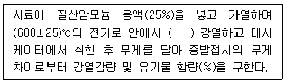
- 2시간
- 3시간
- 4시간
- 5시간
(정답률: 45%)
78. 흡광광도법에서 흡광도 눈금의 보정에 관한 내용으로 ( ) 에 옳은 것은?
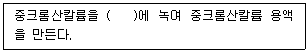
- N/10 수산화나트륨용액
- N/20 수산화나트륨용액
- N/10 수산화칼륨용액
- N/20 수산화칼륨용액
(정답률: 47%)
79. 총칙에 관한 내용으로 틀린 것은?
- “정밀히 단다”라 함은 규정된 수치의 무게를 0.1mg까지 다는 것을 말한다.
- “정확히 취하여”라 하는 것은 규정한 양의 액체를 홀피펫으로 눈금까지 취하는 것을 말한다.
- “냄새가 없다”라고 기재한 것은 냄새가 없거나, 또는 거의 없는 것을 표시하는 것이다.
- “방울수”라 함은 20℃에서 정제수 20방울을 적하할 때, 그 부피가 약 1mL 되는 것을 뜻한다.
(정답률: 52%)
80. 흡광광도법에 의한 시안(CN)시험에서 측정원리를 바르게 나타낸 것은?
- 피리딘·피라졸론법 - 청색
- 디페닐카르바지드법 - 적자색
- 디디존법 - 적색
- 디에틸디티오카르바민산은법 – 적자색
(정답률: 62%)
5과목: 폐기물 관계 법규
81. 폐기물처리업자에게 영업정지에 갈음하여 부과할 수 있는 과징금에 관한 설명으로 ( )에 옳은 것은?
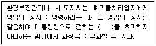
- 매출액에 100분의 1을 곱한 금액
- 매출액에 100분의 5을 곱한 금액
- 매출액에 100분의 10을 곱한 금액
- 매출액에 100분의 15을 곱한 금액
(정답률: 64%)
82. 주변지역 영향 조사대상 폐기물처리시설 기준으로 ( )에 적절한 것은?
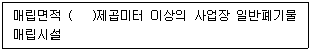
- 3만
- 5만
- 10만
- 15만
(정답률: 63%)
83. 3년 이하의 징역이나 3천만원 이하의 벌금에 해당하는 벌칙기준에 해당하지 않는 것은?
- 고의로 사실과 다른 내용의 폐기물분석 결과서를 발급한 폐기물분석전문기관
- 승인을 받지 아니하고 폐기물처리시설을 설치한 자
- 다른 사람에게 자기의 성명이나 상호를 사용하여 폐기물을 처리하게 하거나 그 허가증을 다른 사람에게 빌려준 자
- 폐기물처리시설의 설치 또는 유지·관리가 기준에 맞지 아니하여 지시된 개선명령을 이행하지 아니하거나 사용중지 명령을 위반한 자
(정답률: 43%)
84. 재활용의 에너지 회수기준 등에서 환경부령으로 정하는 활동 중 가연성 고형폐기물로부터 규정된 기준에 맞게 에너지를 회수하는 활동이 아닌 것은?
- 다른 물질과 혼합하지 아니하고 해당 폐기물의 고위발열량이 킬로그램당 5천 킬로칼로리 이상일 것
- 에너지의 회수효율(회수에너지 총량을 투입에너지 총량으로 나눈 비율을 말한다.)이 75퍼센트 이상일 것
- 회수열을 모두 열원으로 스스로 이용하거나 다른 사람에게 공급할 것
- 환경부장관이 정하여 고시하는 경우에는 폐기물의 30퍼센트 이상을 원료나 재료로 재활용하고 그 나머지 중에서 에너지의 회수에 이용할 것
(정답률: 53%)
85. 매립시설의 사후관리기준 및 방법에 관한 내용 중 발생가스 관리방법(유기성폐기물을 매립한 폐기물매립시설만 해당된다.)에 관한 내용이다. ( )에 공통으로 들어갈 내용은?
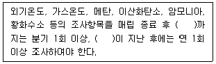
- 1년
- 2년
- 3년
- 5년
(정답률: 44%)
86. 지정폐기물 중 의료폐기물을 수집·운반하는 경우의 시설, 장비, 기술능력 기준으로 틀린 것은? (단, 폐기물처리업 중 폐기물수집, 운반업의 기준)
- 적재능력 0.45톤 이상의 냉장차량(섭씨 4도 이하인 것을 말한다.) 3대 이상
- 소독장비 1식 이상
- 폐기물처리산업기사, 임상병리사 또는 위생사 중 1명 이상
- 모든 차량을 주차할 수 있는 규묘의 주차장
(정답률: 40%)
87. 폐기물처리시설(매립시설인 경우)을 폐쇄하고자 하는 자는 당해 시설의 폐쇄 예정일 몇 개월 이전에 폐쇄신고서를 제출하여야 하는가?
- 1개월
- 2개월
- 3개월
- 6개월
(정답률: 53%)
88. 폐기물을 매립하는 시설 중 사후관리이행 보증금의 사전적립대상인 시설의 면적기준은?
- 3000 m2 이상
- 3300 m2 이상
- 3600 m2 이상
- 3900 m2 이상
(정답률: 65%)
89. 폐기물 처리시설에서 배출되는 오염물질을 측정하기 위해 환경부령으로 정하는 측정기관이 아닌 것은? (단, 국립환경과학원장이 고시하는 기관은 제외함)
- 한국환경공단
- 보건환경연구원
- 한국산업기술시험원
- 수도권매립지관리공사
(정답률: 41%)
90. 매립시설의 설치를 마친 자가 환경부령으로 정하는 검사기관으로부터 설치검사를 받고자 하는 경우, 검사를 받고자 하는 날 15일전까지 검사신청서에 각 서류를 첨부하여 검사기관에 제출하여야 하는데 그 서류에 해당하지 않는 것은?
- 설계도서 및 구조계산서 사본
- 시설운전 및 유지관리계획서
- 설치 및 장비확보명세서
- 시방서 및 재료시험성적서 사본
(정답률: 34%)
91. 폐기물처리업의 변경허가를 받아야 할 중요사항으로 틀린 것은? (단, 폐기물 수집·운반업에 해당하는 경우)
- 수집·운반대상 폐기물의 변경
- 영업구역의 변경
- 연락장소 또는 사무실 소재지의 변경
- 운반차량(임시차량은 제외한다.)의 증차
(정답률: 62%)
92. 폐기물 처분시설 중 관리형 매립시설에서 발생하는 침출수의 배출허용기준 중 '나 지역'의 생물화학적 산소요구량의 기준(mg/L 이하)은?
- 60
- 70
- 80
- 90
(정답률: 61%)
93. 폐기물의 재활용을 금지하거나 제한하는 것이 아닌 것은?
- 폐석면
- PCBs
- VOCs
- 의료폐기물
(정답률: 56%)
94. 지정폐기물의 종류 중 유해물질함유 폐기물(환경부령으로 정하는 물질을 함유한 것으로 한정한다.)에 관한 기준으로 틀린 것은?
- 광재(철광 원석의 사용으로 인한 고로슬래그는 제외한다.)
- 분진(대기오염 방지시설에서 포집된 것으로 한정하되, 소각시설에서 발생되는 것은 제외한다.)
- 폐합성 수지
- 폐내화물 및 재벌구이 전에 유약을 바른 도자기 조작
(정답률: 42%)
95. 환경부장관은 폐기물에 관한 시험·분석 업무를 전문적으로 수행하기 위하여 폐기물 시험·분석 전문기관으로 지정할 수 있다. 이에 해당되지 않는 기관은?
- 한국건설기술연구원
- 한국환경공단
- 수도권매립지관리공사
- 보건환경연구원
(정답률: 55%)
96. 기술관리인을 두어야 하는 멸균분쇄시설의 시설기준으로 적절한 것은?
- 시간당 처분능력이 100kg 이상인 시설
- 시간당 처분능력이 125kg 이상인 시설
- 시간당 처분능력이 200kg 이상인 시설
- 시간당 처분능력이 300kg 이상인 시설
(정답률: 54%)
97. 폐기물관리의 기본원칙으로 틀린 것은?
- 폐기물은 소각, 매립 등의 처분을 하기보다는 우선적으로 재활용함으로써 자원생산성의 향상에 이바지하도록 하여야 한다.
- 국내에서 발생한 폐기물은 가능하면 국내에서 처리되어야 하고, 폐기물은 수입할 수 없다.
- 누구든지 폐기물을 배출하는 경우에는 주변환경이나 주민의 건강에 위해를 끼치지 아니하도록 사전에 적절한 조치를 하여야 한다.
- 사업자는 제품의 생산방식 등을 개선하여 폐기물의 발생을 최대한 억제하고, 발생한 폐기물을 스스로 재활용함으로써 폐기물의 배출을 최소화하여야 한다.
(정답률: 67%)
98. 폐기물 처리업자가 폐기물의 발생, 배출, 처리상황 등을 기록한 장부의 보존기간은? (단, 최종 기재일 기준)
- 6개월간
- 1년간
- 3년간
- 5년간
(정답률: 70%)
99. 폐기물 처리시설 종류의 구분이 틀린 것은?
- 기계적 재활용시설 : 유수 분리 시설
- 화학적 재활용시설 : 연료화 시설
- 생물학적 재활용시설 : 버섯재배시설
- 생물학적 재활용시설 : 호기성·혐기성 분해시설
(정답률: 58%)
100. 지정폐기물인 부식성 폐기물 기준으로 ( )에 올바른 것은?
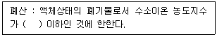
- 1.0
- 1.5
- 2.0
- 2.5
(정답률: 60%)